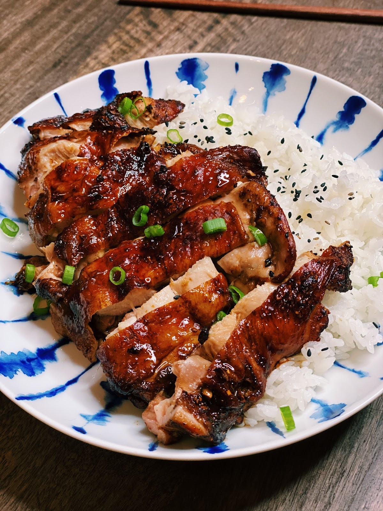

Air Fryer Soy Sauce Chicken

Description
This recipe is the BEST Air Fryer Soy Sauce Chicken you will ever try, and the best part is it is also SUPER easy to make!
The Air Fryer Soy Sauce Chicken is crispy on the outside, while the meat is super juicy and flavourful on the inside.
Ingredients
- 2 Piece of Boneless Chicken Thigh (Skin On)
- 1.5 tbsp of Soy Sauce
- 1 tbsp of Dark Soy Sauce
- 1/2 tbsp of Five Spice Powder
- 1 tsp of White Pepper
- 2 tsp of Sugar or honey
- 3 cloves of Garlic (minced)
Steps
- Marinate the chicken with soy sauce, dark soy sauce, five-spice powder, white pepper, sugar , and minced garlic for 30 minutes.
- Add in the chicken in the air fryer skin side facing up. Set the air fryer at 380F for 15 minutes.